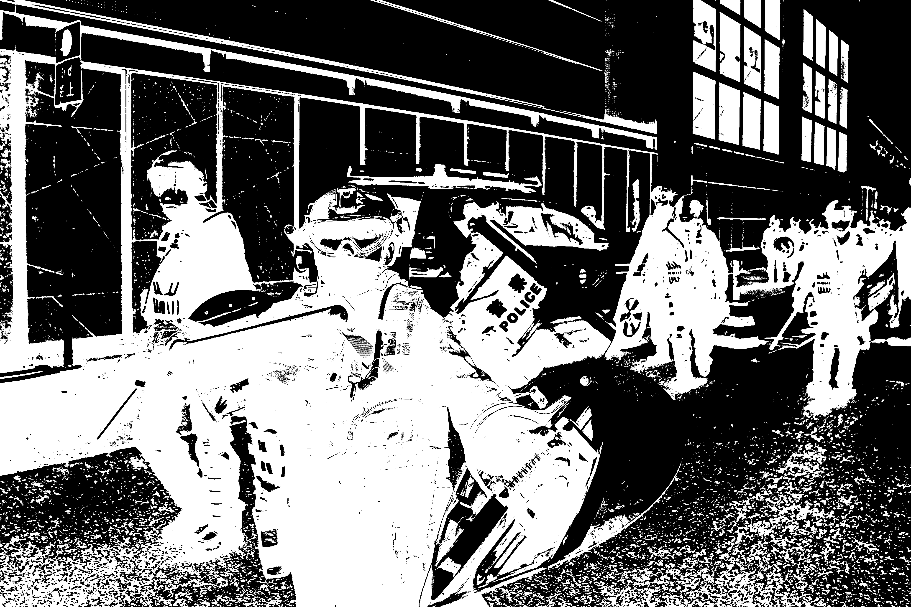

On a sweltering afternoon in August, antigovernment protesters in gas masks and hard hats flooded a six-lane road, prompting riot police officers to fire tear gas. But life on that Hong Kong street continued after the clashes faded, even as the neighborhood became the focus of further unrest.
FUCK POPO